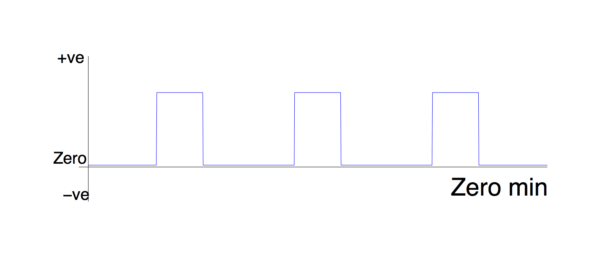
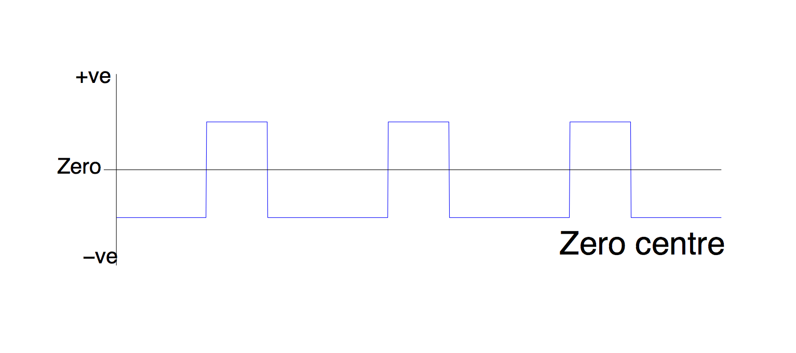
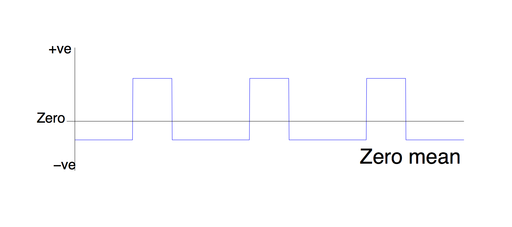

The zero-ing options in PPI
When you create a regressor of type 'interaction' in the stats tab of the Feat gui, you to select from a drop down list called 'zero' for each regressor which is going into your PPI.
1. Min
Zero min makes the minimum value of the regressor zero.
If you do this to a task (PSY) EV, you will essentially be setting the value of the PSY part of the PPI to zero during your rest blocks. Since multiplying any number by zero gives zero, this means that your PPI regressor will be a flat line in the rest blocks. In other words, your PPI regressor looks like the timecourse of your seed ROI during the task, and zero otherwise.

This type of PPI regressor is looking for voxels which are correlated with the seed ROI during the task - but they don't actually have to be more correlated during the task than elsewhere.
Think about it this way: imagine some voxel was always correlated with your seed region. If you de-min the PSY part of your PPI, and create a PPI regressor like the one above, then that PPI regressor will still 'pick up' that voxel - even though the correlation is not task-specific.
When would you use this option for the PSY component?
In the case that you are doing a between-subjects or between-sessions design, and you want to 'partial out' the any changes in the main effect of subjects/sessions on your task. This is discussed further here.
When would you use this option for the PHYS component?
Don't.
2. Centre
Zero centering sets zero to be halfway between the highest and lowest points of the regressor.
This means that the 'on' and 'off' periods of your design are treated equally even if they have different durations - in effect it created a 1, -1 contrast between the 'on' and 'off' blocks of your task.
Why is this different from de-meaning (option 3)?
Imagine that you have 'on' and 'off' blocks of un-equal length, say the 'off' blocks are twice as long, and you de-mean this (literally, subtract the mean, which is nearer to the height of the 'off' blocks, since these make up more of the time). The resulting regressor will have higher blocks in the on period than the off period - twice as high, in fact. Now you multiply this with your ROI timecourse to get a PPI regressor. In other words, you are multiplying the timecourse by -1 during the off blocks, and +2 during the on blocks.

This regressor is looking for voxels which are twice as correlated with your seed ROI in the on block, as in the off block. This means you need double the effect to get a significant result - obviously increasing the chance of a false negative.
What you really want is to multiply the ROI timecourse by -1 diring the off blocks and +1 during the on blocks. Using the zero-centre option does this for you.
When would you use this option for the PSY component?
Any time you are doing a within-subjects design
When would you use this option for the PHYS component?
Don't.
3. Mean
This option literally subtracts the mean from the regressor. You want to do this for your ROI timecourse (PHYS regressor).

When would you use this option for the PSY component?
Don't. Although if you have used this instead of zero-centring in a previous analysis, it can only have increased the chance of a false negative.
When would you use this option for the PHYS component?
Always.